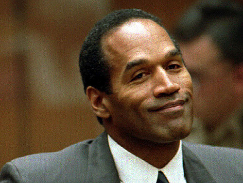

On June 12, 1994, Nicole Brown Simpson and Ron Goldman were found stabbed to death outside Nicole's condominium in the Brentwood area of Los Angeles. Simpson was a person of interest in their murders. Simpson did not turn himself in, and on June 17 he became the object of a low-speed pursuit in a white Ford Bronco SUV; TV stations interrupted coverage of the 1994 NBA Finals to broadcast the incident live. The pursuit, arrest, and trial were among the most widely publicized events in American history. The trial, often characterized as the Trial of the Century because of its international publicity similar to that of Sacco and Vanzetti and the Lindbergh kidnapping, culminated after eleven months on October 3, 1995, when the jury rendered a verdict of "not guilty" for the two murders. An estimated 100 million people nationwide tuned in to watch or listen to the verdict announcement. Following Simpson's acquittal, no additional arrests or convictions related to the murders were made.

information from wikipedia!